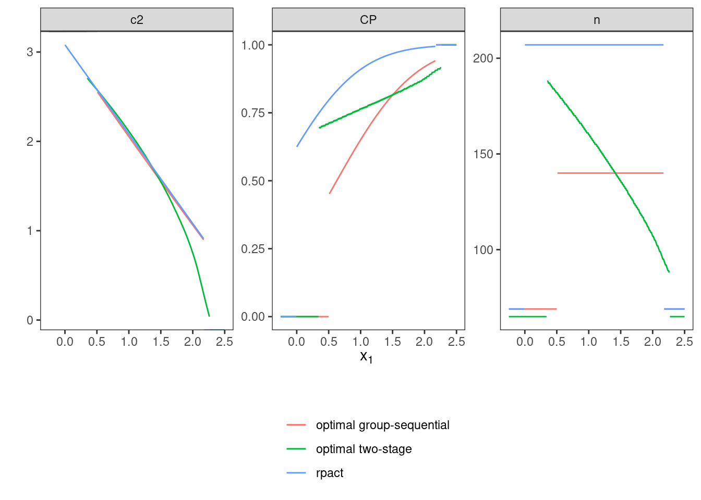

7 Scenario VI: binomial distribution, point prior
7.1 Details
In this scenario, the implemented normal approximation of the binomial distribution is evaluated. There are two treatment groups \(E\) (experimental) and \(C\) (control) and the outcome of interest is the event rate in both groups. The event rate in the control group is assumed to equal \(p_C = 0.3\). Under the null hypothesis, the rate difference \(p_E - p_C = 0\) is assumed. Under the alternative, the rate difference is assumed to equal \(p_E - p_C = 0.2\). Type one error rate should be protected at 2.5% and the design’s power should be at least 90%.
7.2 Variant VI-1: Minimizing Expected Sample Size Under Point Prior
In this variant, it is evaluated whether the optimization leads to more efficient designs and is plausible with published results.
7.2.1 Objective
Expected sample size under the alternative point mass prior \(\delta = 0.2\) is minimized.
7.2.3 Initial Designs
For this example, the optimal one-stage, group-sequential, and generic
two-stage designs are computed.
The initial design for the one-stage case is determined heuristically
and both the group sequential and the generic two-stage designs are
optimized starting from the corresponding group-sequential design as
computed by the rpact package.
order <- 7L
# data frame of initial designs
tbl_designs <- tibble(
type = c("one-stage", "group-sequential", "two-stage"),
initial = list(
OneStageDesign(200, 2.0),
rpact_design(datadist, 0.2, 0.025, 0.9, TRUE, order),
TwoStageDesign(rpact_design(datadist, 0.2, 0.025, 0.9, TRUE, order))) )The order of integration is set to 7.
7.2.5 Test Cases
To avoid improper solutions, it is first verified that the maximum number of iterations was not exceeded in any of the three cases.
tbl_designs %>%
transmute(
type,
iterations = purrr::map_int(tbl_designs$optimal,
~.$nloptr_return$iterations) ) %>%
{print(.); .} %>%
{testthat::expect_true(all(.$iterations < opts$maxeval))}## # A tibble: 3 × 2
## type iterations
## <chr> <int>
## 1 one-stage 28
## 2 group-sequential 1775
## 3 two-stage 5102Next, the type one error rate and power constraints are verified for all three designs by simulation:
tbl_designs %>%
transmute(
type,
toer = purrr::map(tbl_designs$optimal,
~sim_pr_reject(.[[1]], .0, datadist)$prob),
power = purrr::map(tbl_designs$optimal,
~sim_pr_reject(.[[1]], .2, datadist)$prob) ) %>%
unnest(., cols = c(toer, power)) %>%
{print(.); .} %>% {
testthat::expect_true(all(.$toer <= alpha * (1 + tol)))
testthat::expect_true(all(.$power >= min_power * (1 - tol))) }## # A tibble: 3 × 3
## type toer power
## <chr> <dbl> <dbl>
## 1 one-stage 0.0251 0.900
## 2 group-sequential 0.0249 0.900
## 3 two-stage 0.0249 0.901Since the degrees of freedom of the three design classes are ordered as
‘two-stage’ > ‘group-sequential’ > ‘one-stage’,
the expected sample sizes (under the alternative) should be ordered
in reverse (‘two-stage’ smallest).
Additionally, expected sample sizes under both null and alternative
are computed both via evaluate() and simulation-based.
ess0 <- ExpectedSampleSize(datadist, H_0)
tbl_designs %>%
mutate(
ess = map_dbl(optimal,
~evaluate(ess, .$design) ),
ess_sim = map_dbl(optimal,
~sim_n(.$design, .2, datadist)$n ),
ess0 = map_dbl(optimal,
~evaluate(ess0, .$design) ),
ess0_sim = map_dbl(optimal,
~sim_n(.$design, .0, datadist)$n ) ) %>%
{print(.); .} %>% {
# sim/evaluate same under alternative?
testthat::expect_equal(.$ess, .$ess_sim,
tolerance = tol_n,
scale = 1)
# sim/evaluate same under null?
testthat::expect_equal(.$ess0, .$ess0_sim,
tolerance = tol_n,
scale = 1)
# monotonicity with respect to degrees of freedom
testthat::expect_true(all(diff(.$ess) < 0)) }## # A tibble: 3 × 7
## type initial optimal ess ess_sim ess0 ess0_sim
## <chr> <list> <list> <dbl> <dbl> <dbl> <dbl>
## 1 one-stage <OnStgDsg> <adptrOpR [3]> 124 124 124 124
## 2 group-sequential <GrpSqntD> <adptrOpR [3]> 96.2 96.2 89.7 89.8
## 3 two-stage <TwStgDsg> <adptrOpR [3]> 94.3 94.2 98.5 98.6## Warning in readLines(f, n): incomplete final line found on
## '/home/runner/work/adoptr-validation-report/adoptr-validation-report/DESCRIPTION'## Warning in readLines(dsc_path): incomplete final line found on
## '/home/runner/work/adoptr-validation-report/adoptr-validation-report/DESCRIPTION'## Warning in readLines(file): incomplete final line found on
## '/home/runner/work/adoptr-validation-report/adoptr-validation-report/DESCRIPTION'## Warning in readLines(f, n): incomplete final line found on
## '/home/runner/work/adoptr-validation-report/adoptr-validation-report/DESCRIPTION'## Warning in readLines(dsc_path): incomplete final line found on
## '/home/runner/work/adoptr-validation-report/adoptr-validation-report/DESCRIPTION'## Warning in readLines(file): incomplete final line found on
## '/home/runner/work/adoptr-validation-report/adoptr-validation-report/DESCRIPTION'The expected sample size under the alternative must be lower or equal than
the expected sample size of the initial rpact group-sequential design that
is based on the inverse normal combination test.
testthat::expect_lte(
evaluate(ess,
tbl_designs %>%
filter(type == "group-sequential") %>%
.$optimal %>%
.[[1]] %>%
.$design ),
evaluate(ess,
tbl_designs %>%
filter(type == "group-sequential") %>%
.$initial %>%
.[[1]] ) )Finally, the rpact group-sequential design,
the optimal group-sequential design, and the optimal generic two-stage design
are plotted to allow visual inspection.

7.3 Variant VI-2: Minimizing Expected Sample Size under Null Hypothesis
7.3.3 Initial design
Optimization under the null favors a monotonically increasing sample size function, and thus also a different shape of the \(c_2\) function. Thus, we start with a constant \(c_2\) function by heuristically setting it to \(2\) on the continuation area. Also, optimizing under the null favors extremely conservative boundaries for early efficacy stopping and we thus impose a fairly liberal upper bound of \(3\) for early efficacy stopping.
7.3.5 Test cases
Make sure that the optimization algorithm converged within the set maximum number of iterations:
## [1] 12245The \(n_2\) function of the optimal two-stage design is expected to be monotonously increasing.
Next, the type one error rate and power constraints are tested.
tbl_performance <- tibble(
delta = c(.0, .2) ) %>%
mutate(
power = map(
delta,
~evaluate(
Power(datadist, PointMassPrior(., 1)),
opt_h0$design) ),
power_sim = map(
delta,
~sim_pr_reject(opt_h0$design, ., datadist)$prob),
ess = map(
delta,
~evaluate(ExpectedSampleSize(
datadist,
PointMassPrior(., 1) ),
opt_h0$design) ),
ess_sim = map(
delta,
~sim_n(opt_h0$design, . ,datadist)$n ) ) %>%
unnest(., cols = c(power, power_sim, ess, ess_sim))
print(tbl_performance)## # A tibble: 2 × 5
## delta power power_sim ess ess_sim
## <dbl> <dbl> <dbl> <dbl> <dbl>
## 1 0 0.0250 0.0250 74.8 74.9
## 2 0.2 0.901 0.901 149. 149.testthat::expect_lte(
tbl_performance %>% filter(delta == 0) %>% .$power_sim,
alpha * (1 + tol) )
testthat::expect_gte(
tbl_performance %>% filter(delta == 0.2) %>% .$power_sim,
min_power * (1 - tol) )
# make sure that evaluate() leads to same results
testthat::expect_equal(
tbl_performance$power, tbl_performance$power_sim,
tol = tol,
scale = 1 )## Warning in readLines(f, n): incomplete final line found on
## '/home/runner/work/adoptr-validation-report/adoptr-validation-report/DESCRIPTION'## Warning in readLines(dsc_path): incomplete final line found on
## '/home/runner/work/adoptr-validation-report/adoptr-validation-report/DESCRIPTION'## Warning in readLines(file): incomplete final line found on
## '/home/runner/work/adoptr-validation-report/adoptr-validation-report/DESCRIPTION'## Warning in readLines(f, n): incomplete final line found on
## '/home/runner/work/adoptr-validation-report/adoptr-validation-report/DESCRIPTION'## Warning in readLines(dsc_path): incomplete final line found on
## '/home/runner/work/adoptr-validation-report/adoptr-validation-report/DESCRIPTION'## Warning in readLines(file): incomplete final line found on
## '/home/runner/work/adoptr-validation-report/adoptr-validation-report/DESCRIPTION'## Warning in readLines(f, n): incomplete final line found on
## '/home/runner/work/adoptr-validation-report/adoptr-validation-report/DESCRIPTION'## Warning in readLines(dsc_path): incomplete final line found on
## '/home/runner/work/adoptr-validation-report/adoptr-validation-report/DESCRIPTION'## Warning in readLines(file): incomplete final line found on
## '/home/runner/work/adoptr-validation-report/adoptr-validation-report/DESCRIPTION'## Warning in readLines(f, n): incomplete final line found on
## '/home/runner/work/adoptr-validation-report/adoptr-validation-report/DESCRIPTION'## Warning in readLines(dsc_path): incomplete final line found on
## '/home/runner/work/adoptr-validation-report/adoptr-validation-report/DESCRIPTION'## Warning in readLines(file): incomplete final line found on
## '/home/runner/work/adoptr-validation-report/adoptr-validation-report/DESCRIPTION'The expected sample size under the null must be lower or equal than the expected sample size of the initial rpact group-sequential design.
7.4 Variant VI-3: Conditional Power constraint
7.4.1 Objective
Same as in VI-1, the expected sample size under the alternative is minimized.
7.4.2 Constraints
Besides the previous global type one error rate and power constraints, an additional constraint on conditional power is imposed.
7.4.3 Initial Design
The same initial (generic two-stage) design as in VI-1 is used.
7.4.5 Test Cases
Check if the optimization converged.
## [1] 3131Check constraints.
tbl_performance <- tibble(
delta = c(.0, .2) ) %>%
mutate(
power = map(
delta,
~evaluate(
Power(datadist, PointMassPrior(., 1)),
opt_cp$design) ),
power_sim = map(
delta,
~sim_pr_reject(opt_cp$design, ., datadist)$prob),
ess = map(
delta,
~evaluate(ExpectedSampleSize(
datadist,
PointMassPrior(., 1) ),
opt_cp$design) ),
ess_sim = map(
delta,
~sim_n(opt_cp$design, . ,datadist)$n ) ) %>%
unnest(., cols = c(power, power_sim, ess, ess_sim))
print(tbl_performance)## # A tibble: 2 × 5
## delta power power_sim ess ess_sim
## <dbl> <dbl> <dbl> <dbl> <dbl>
## 1 0 0.0250 0.0249 91.6 91.6
## 2 0.2 0.899 0.899 94.5 94.5testthat::expect_lte(
tbl_performance %>% filter(delta == 0) %>% .$power_sim,
alpha * (1 + tol) )
testthat::expect_gte(
tbl_performance %>% filter(delta == 0.2) %>% .$power_sim,
min_power * (1 - tol) )
# make sure that evaluate() leads to same results
testthat::expect_equal(
tbl_performance$power, tbl_performance$power_sim,
tol = tol,
scale = 1 )## Warning in readLines(f, n): incomplete final line found on
## '/home/runner/work/adoptr-validation-report/adoptr-validation-report/DESCRIPTION'## Warning in readLines(dsc_path): incomplete final line found on
## '/home/runner/work/adoptr-validation-report/adoptr-validation-report/DESCRIPTION'## Warning in readLines(file): incomplete final line found on
## '/home/runner/work/adoptr-validation-report/adoptr-validation-report/DESCRIPTION'## Warning in readLines(f, n): incomplete final line found on
## '/home/runner/work/adoptr-validation-report/adoptr-validation-report/DESCRIPTION'## Warning in readLines(dsc_path): incomplete final line found on
## '/home/runner/work/adoptr-validation-report/adoptr-validation-report/DESCRIPTION'## Warning in readLines(file): incomplete final line found on
## '/home/runner/work/adoptr-validation-report/adoptr-validation-report/DESCRIPTION'## Warning in readLines(f, n): incomplete final line found on
## '/home/runner/work/adoptr-validation-report/adoptr-validation-report/DESCRIPTION'## Warning in readLines(dsc_path): incomplete final line found on
## '/home/runner/work/adoptr-validation-report/adoptr-validation-report/DESCRIPTION'## Warning in readLines(file): incomplete final line found on
## '/home/runner/work/adoptr-validation-report/adoptr-validation-report/DESCRIPTION'## Warning in readLines(f, n): incomplete final line found on
## '/home/runner/work/adoptr-validation-report/adoptr-validation-report/DESCRIPTION'## Warning in readLines(dsc_path): incomplete final line found on
## '/home/runner/work/adoptr-validation-report/adoptr-validation-report/DESCRIPTION'## Warning in readLines(file): incomplete final line found on
## '/home/runner/work/adoptr-validation-report/adoptr-validation-report/DESCRIPTION'The conditional power constraint is evaluated and tested on a grid over the continuation region (both simulated via numerical integration).
tibble(
x1 = seq(opt_cp$design@c1f, opt_cp$design@c1e, length.out = 25),
cp = map_dbl(x1, ~evaluate(cp, opt_cp$design, .)),
cp_sim = map_dbl(x1, function(x1) {
x2 <- simulate(datadist, 10^6, n2(opt_cp$design, x1), .2, 42)
rej <- ifelse(x2 > c2(opt_cp$design, x1), 1, 0)
return(mean(rej))
}) ) %>%
{print(.); .} %>% {
testthat::expect_true(all(.$cp >= 0.85 * (1 - tol)))
testthat::expect_true(all(.$cp_sim >= 0.85 * (1 - tol)))
testthat::expect_true(all(abs(.$cp - .$cp_sim) <= tol)) }## # A tibble: 25 × 3
## x1 cp cp_sim
## <dbl> <dbl> <dbl>
## 1 0.586 0.850 0.849
## 2 0.657 0.850 0.850
## 3 0.727 0.851 0.851
## 4 0.798 0.851 0.851
## 5 0.868 0.849 0.848
## 6 0.939 0.849 0.849
## 7 1.01 0.850 0.849
## 8 1.08 0.850 0.850
## 9 1.15 0.851 0.851
## 10 1.22 0.852 0.851
## # ℹ 15 more rowsFinally, the expected sample size under the alternative prior should be larger than in the case without the constraint VI-1.